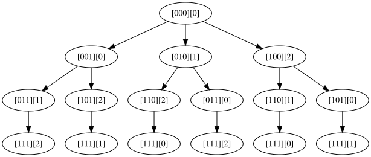
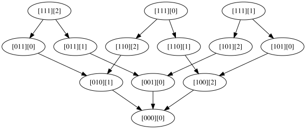
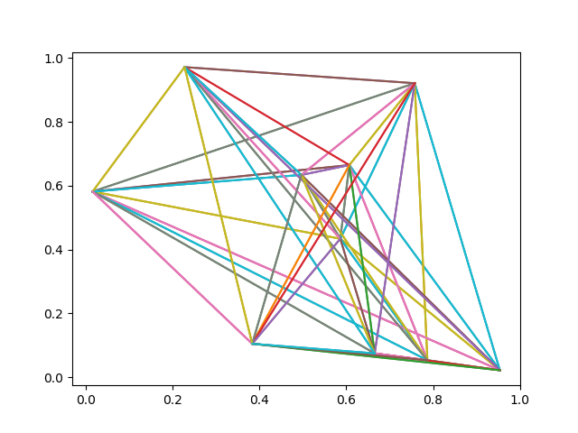
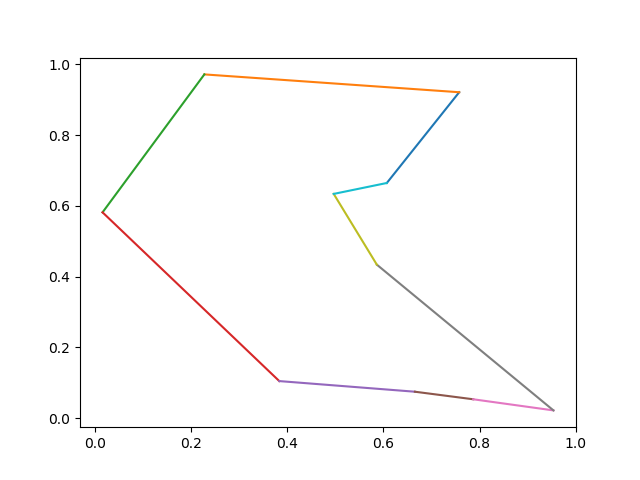

This is second episode of series: TSP From DP to Deep Learning.
- Episode 1: AC TSP on AIZU with recursive DP
- Episode 2: TSP DP on a Euclidean Dataset
- Episode 3: Pointer Networks in PyTorch
- Episode 4: Search for Most Likely Sequence
- Episode 5: Reinforcement Learning PyTorch Implementation
AIZU TSP Bottom Up Iterative DP
In last episode, we provided a top down recursive DP in Python 3 and Java 8. Now we continue to improve and convert it to bottom up iterative DP version. Below is a graph with 3 vertices, the top down recursive calls are completely drawn.

Looking from bottom up, we could identify corresponding topological computing order with ease. First, we compute all bit states with 3 ones, then 2 ones, then 1 one.

Pseudo Java code below.
1 | for (int bitset_num = N; bitset_num >=0; bitset_num++) { |
For example, dp[00010][1] is the min distance starting from vertex 0, and just arriving at vertex 1:
$0 \rightarrow 1 \rightarrow ? \rightarrow ? \rightarrow ? \rightarrow 0$.
In order to find out total min distance, we need to enumerate all possible u for first question mark.
$$
(0 \rightarrow 1) +
\begin{align*}
\min \left\lbrace
\begin{array}{r@{}l}
2 \rightarrow ? \rightarrow ? \rightarrow 0 + dist(1,2) \qquad\text{ new_state=[00110][2] } \qquad\\
3 \rightarrow ? \rightarrow ? \rightarrow 0 + dist(1,3) \qquad\text{ new_state=[01010][3] } \qquad\\
4 \rightarrow ? \rightarrow ? \rightarrow 0 + dist(1,4) \qquad\text{ new_state=[10010][4] } \qquad
\end{array}
\right.
\end{align*}
$$
Java Iterative DP Code
AC code in Python 3 and Java 8. Illustrate core Java code below.
1 | public long solve() { |
In this way, runtime complexity can be spotted easily, three for loops leading to O($2^n * n * n$) = O($2^n*n^2$ ).
DP on Euclidean Dataset
So far, TSP DP has been crystal clear and we move forward to introducing PTR_NET dataset on Google Drive by Oriol Vinyals who is the author of Pointer Networks. Each line in the dataset has the following pattern:
1 | x0, y0, x1, y1, ... output 1 v1 v2 v3 ... 1 |
It first lists n points in (x, y) coordinate, followed by “output”, then followed by one of the minimal distance tours, starting and ending with vertex 1 (indexed from 1 not 0).
Some examples of 10 vertices are:
1 | 0.607122 0.664447 0.953593 0.021519 0.757626 0.921024 0.586376 0.433565 0.786837 0.052959 0.016088 0.581436 0.496714 0.633571 0.227777 0.971433 0.665490 0.074331 0.383556 0.104392 output 1 3 8 6 10 9 5 2 4 7 1 |
Plot first example using code below.
1 | import matplotlib.pyplot as plt |

Now plot the optimal tour:
$$
1 \rightarrow 3 \rightarrow 8 \rightarrow 6 \rightarrow 10 \rightarrow 9 \rightarrow 5 \rightarrow 2 \rightarrow 4 \rightarrow 7 \rightarrow 1
$$
1 | tour_str = '1 3 8 6 10 9 5 2 4 7 1' |

Python Code Illustrated
Init Graph Edges
Based on previous top down version, several changes are made. First, we need to have an edge between every 2 vertices and due to our matrix representation of the directed edge, edges of 2 directions are initialized.
1 | g: Graph = Graph(N) |
Auxilliary Variable to Track Tour Vertices
One major enhancement is to record the optimal tour during enumerating. We introduce another variable parent[bitstate][v] to track next vertex u, with shortest path.
1 | ret: float = FLOAT_INF |
After minimal tour distance is found, one optimal tour is formed with the help of parent variable.
1 | def _form_tour(self): |
Note that for each test case, only one tour is given after “output”. Our code may form a different tour but it has same distance as what the dataset generates, which can be verified by following code snippet. See full code on github.
1 | tsp: TSPSolver = TSPSolver(g) |
Comments
shortnamefor Disqus. Please set it in_config.yml.